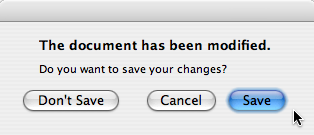

| Home · All Classes · Modules · QSS HELP · QSS 案例 · VER007 HOME |
该QMessageBox提示类提供通知用户或询问用户问题，并接收应答模式对话框。More...
继承QDialog。
该QMessageBox提示类提供通知用户或询问用户问题，并接收应答模式对话框。
一个消息框显示一个主text要提醒用户的情况下，一informative text进一步解释警报或询问用户问题，以及一个可选的detailed text到如果用户请求它提供甚至更多的数据。一个消息框还可以显示icon和standard buttons用于接受用户的响应。
提供两个API使用QMessageBox提示，该物业为基础的API ，和静态函数。调用的静态功能之一是简单的方法，但它比使用基于属性的API，弹性较差，其结果是不够丰富。使用基于属性的API被推荐。
使用该物业的API ，构建QMessageBox提示的实例，设置所需的属性和调用exec_（ ）来显示讯息。最简单的配置是仅设置message text属性。
QMessageBox msgBox; msgBox.setText("The document has been modified."); msgBox.exec_();
用户必须点击OK按钮来关闭消息框。 GUI的其馀部分被阻塞，直到消息框被驳回。

比只是提醒用户事件更好的办法是还询问用户该怎么办才好。存储在这个问题informative text属性，并设置standard buttons属性设置为你想要的设置的用户响应的组按钮。这些按钮由合并指定的值StandardButtons使用按位OR运算符。对于按钮的显示顺序是依赖于平台的。例如，在Windows上，Save被显示到左侧Cancel，而在Mac OS上，顺序是相反的。
纪念你的标准按钮之一，是你的default button。
QMessageBox msgBox; msgBox.setText("The document has been modified."); msgBox.setInformativeText("Do you want to save your changes?"); msgBox.setStandardButtons(QMessageBox.Save | QMessageBox.Discard | QMessageBox.Cancel); msgBox.setDefaultButton(QMessageBox.Save); int ret = msgBox.exec_();
这是推荐的做法 Mac OS X Guidelines。类似的准则适用于其他平台，但要注意方式的不同informative text针对不同的平台进行处理。

该exec_（）槽返回StandardButtons单击的按钮的值。
switch (ret) { case QMessageBox.Save: // Save was clicked break; case QMessageBox.Discard: // Don't Save was clicked break; case QMessageBox.Cancel: // Cancel was clicked break; default: // should never be reached break; }
为了给用户更多的信息，以帮助他回答这个问题，设置detailed text属性。如果detailed text属性设置，Show Details...将显示按钮。

点击Show Details...按钮将显示详细的文字。

该detailed text属性总是被解释为纯文本。该main text和informative text性能可以是纯文本或富文本。这些字符串是根据所设定的解释text format属性。默认设置为auto-text。
请注意，对于包含XML的元字符的一些纯文本字符串，自动文本rich text detection test可能会失败，从而导致你的纯文本字符串被错误地解释为富文本。在这些罕见的情况下，使用Qt.convertFromPlainText（ ）到您的纯文本字符串转换为等效的视觉丰富的文本字符串，或将text format属性明确与setTextFormat（ ） 。
QMessageBox提示支持四种预定义的消息严重级别，或消息类型，这真的只是不同的预定义的图标，他们每场演出。通过设置指定四个预定义的消息类型之一的icon属性的一个predefined icons。以下规则的指导方针：
|
|
Question | For asking a question during normal operations. |
|
|
Information | For reporting information about normal operations. |
|
|
Warning | For reporting non-critical errors. |
|
|
Critical | For reporting critical errors. |
Predefined icons不受QMessageBox提示定义的，而是由式提供。缺省值是No Icon。该消息框，否则相同的所有案件。当使用一个标准的图标，推荐使用表中的一个，或者使用建议您使用平台的风格准则之一。如果没有一个标准的图标是适合你的消息框，你可以通过设置使用自定义图标icon pixmap财产，而不是设置icon属性。
总之，要设置一个图标，用either setIcon（ ）为标准图标之一，or setIconPixmap（）为一个自定义图标。
建立消息框与静态函数的API，虽然方便，比使用基于属性的API，弹性较差，因为静态函数签名缺少用于设置参数informative text和detailed text属性。一个工作围绕这一直使用title参数为消息框正文及text参数为消息框翔实的文字。因为这具有使一个不太可读的消息框的明显缺点，平台指引不建议这样做。该Microsoft Windows User Interface Guidelines建议使用application name作为window's title，这意味着，如果你有除了你的主文本的信息文本，你必须将它连接到text参数。
注意，静态函数签名，相对于它们的键参数，而现在用于设置改变standard buttons和default button。
静态函数可用于创建information（ ）question（ ）warning（）和critical（ ）消息框。
int ret = QMessageBox.warning(this, tr("My Application"), tr("The document has been modified.\n" "Do you want to save your changes?"), QMessageBox.Save | QMessageBox.Discard | QMessageBox.Cancel, QMessageBox.Save);
该Standard Dialogs示例显示了如何使用QMessageBox提示和其他内置Qt对话框。
如果standard buttons不够灵活，你的消息框，您可以使用addButton（ ）过载，需要一个文本和一个ButtonRoleto添加自定义按钮。该ButtonRole所使用QMessageBox提示来确定屏幕上的按钮的顺序（它根据平台而异）。您可以测试的价值clickedButton（ ）调用后exec_（ ） 。例如，
QMessageBox msgBox; QPushButton *connectButton = msgBox.addButton(tr("Connect"), QMessageBox.ActionRole); QPushButton *abortButton = msgBox.addButton(QMessageBox.Abort); msgBox.exec_(); if (msgBox.clickedButton() == connectButton) { // connect } else if (msgBox.clickedButton() == abortButton) { // abort }
默认按钮（即按钮激活时，Enter被按下）可以使用被指定setDefaultButton（ ） 。如果没有指定一个缺省按钮， QMessageBox提示试图找到一个基于所述button roles在消息框中使用的按钮。
逃生按钮（按钮激活时，Esc被按下）可以使用被指定setEscapeButton（ ） 。如果未指定逃跑按钮， QMessageBox提示尝试使用这些规则，以找到一个：
当不能使用这些规则，按确定的逃生按钮Esc没有任何影响。
该枚举描述了可用于描述按键在按钮框的作用。这些角色的组合作为标志用来形容他们的行为的不同方面。
| Constant | Value | Description |
|---|---|---|
| QMessageBox.InvalidRole | -1 | 该按钮是无效的。 |
| QMessageBox.AcceptRole | 0 | 单击该按钮被接受的对话框（如确定）。 |
| QMessageBox.RejectRole | 1 | 单击该按钮会导致被拒绝的对话框（例如取消） 。 |
| QMessageBox.DestructiveRole | 2 | 单击该按钮会导致破坏性的变化（例如，用于舍弃变更） ，然后关闭对话框。 |
| QMessageBox.ActionRole | 3 | 单击该按钮使更改对话框中的元素。 |
| QMessageBox.HelpRole | 4 | 该按钮可点击，请求帮助。 |
| QMessageBox.YesRole | 5 | 该按钮是一个“是”形按钮。 |
| QMessageBox.NoRole | 6 | 该按钮是一个“无”形按钮。 |
| QMessageBox.ApplyRole | 8 | 按钮适用电流的变化。 |
| QMessageBox.ResetRole | 7 | 按钮重置对话框的字段默认值。 |
See also StandardButton。
该枚举具有下列值：
| Constant | Value | Description |
|---|---|---|
| QMessageBox.NoIcon | 0 | 消息框没有任何图标。 |
| QMessageBox.Question | 4 | 一个图标表明该消息是问一个问题。 |
| QMessageBox.Information | 1 | 一个图标，表示该消息是没有什么两样的。 |
| QMessageBox.Warning | 2 | 一个图标指示该消息是一个警告，但也可以处理。 |
| QMessageBox.Critical | 3 | 一个图标指示该消息表示一个严重的问题。 |
这些枚举描述了标准按钮标志。每个按钮都有一个定义ButtonRole。
| Constant | Value | Description |
|---|---|---|
| QMessageBox.Ok | 0x00000400 | 与定义的一个“OK”按钮AcceptRole。 |
| QMessageBox.Open | 0x00002000 | 与定义的“打开”按钮AcceptRole。 |
| QMessageBox.Save | 0x00000800 | 与定义的“保存”按钮AcceptRole。 |
| QMessageBox.Cancel | 0x00400000 | “取消”的按钮定义RejectRole。 |
| QMessageBox.Close | 0x00200000 | 与定义的“关闭”按钮RejectRole。 |
| QMessageBox.Discard | 0x00800000 | A“放弃”或“不保存”按钮，根据不同的平台上，与定义DestructiveRole。 |
| QMessageBox.Apply | 0x02000000 | 一个“应用”的定义的按钮ApplyRole。 |
| QMessageBox.Reset | 0x04000000 | “复位”的定义的按钮ResetRole。 |
| QMessageBox.RestoreDefaults | 0x08000000 | A“还原为默认值”的定义的按钮ResetRole。 |
| QMessageBox.Help | 0x01000000 | 与定义的“帮助”按钮HelpRole。 |
| QMessageBox.SaveAll | 0x00001000 | 与定义的“全部保存”按钮AcceptRole。 |
| QMessageBox.Yes | 0x00004000 | 与定义的“Yes”按钮YesRole。 |
| QMessageBox.YesToAll | 0x00008000 | 与定义的“全是”按钮YesRole。 |
| QMessageBox.No | 0x00010000 | 与定义的“否”按钮NoRole。 |
| QMessageBox.NoToAll | 0x00020000 | 与定义的“全否”按钮NoRole。 |
| QMessageBox.Abort | 0x00040000 | 与定义的“中止”按钮RejectRole。 |
| QMessageBox.Retry | 0x00080000 | 与定义的“重试”按钮AcceptRole。 |
| QMessageBox.Ignore | 0x00100000 | 一个“忽略”的定义的按钮AcceptRole。 |
| QMessageBox.NoButton | 0x00000000 | 无效的按钮。 |
下面的值已过时：
| Constant | Value | Description |
|---|---|---|
| QMessageBox.YesAll | YesToAll | 使用YesToAll代替。 |
| QMessageBox.NoAll | NoToAll | 改用NoToAll 。 |
| QMessageBox.Default | 0x00000100 | 使用defaultButton的说法information（ ）warning（ ）等来代替，或致电setDefaultButton（ ） 。 |
| QMessageBox.Escape | 0x00000200 | Call setEscapeButton（ ）来代替。 |
| QMessageBox.FlagMask | 0x00000300 | |
| QMessageBox.ButtonMask | ~FlagMask |
这个枚举被引入或修改的Qt 4.2 。
该StandardButtons类型是一个typedef为QFlags\u003cStandardButton\u003e 。它存储StandardButton值的或组合。
See also ButtonRole和standardButtons。
该parent的说法，如果不是没有，原因self通过Qt的，而不是PyQt的拥有。
构造一个消息框，没有文字，没有任何按键。parent被传递到QDialog构造函数。
在Mac OS X ，如果你希望你的消息框显示为Qt.Sheet其parent，设置消息框的window modality至Qt.WindowModal或者使用open（ ） 。否则，消息框将是一个标准的对话框。
该parent的说法，如果不是没有，原因self通过Qt的，而不是PyQt的拥有。
构造一个消息框，用给定的icon，title，text和标准buttons。标准或自定义按钮可以在任何时候使用加addButton（ ） 。该parent和f参数被传递到QDialog构造函数。
该消息框是一个application modal对话框。
在Mac OS X中，如果parent不为0 ，你希望你的消息框显示为Qt.Sheet该父，设置消息框的window modality至Qt.WindowModal（默认值） 。否则，消息框将是一个标准的对话框。
See also setWindowTitle（ ）setText（ ）setIcon（）和setStandardButtons（ ） 。
该parent的说法，如果不是没有，原因self通过Qt的，而不是PyQt的拥有。
显示一个简单的关于与标题框title和文本text。关于对话框的父parent。
关于（ ）会在四个地点合适的图标：
关于对话框上有标注为“确定”的单一按钮。在Mac OS X中，关于对话框弹出时为无模式窗口，在其他平台上，它是目前应用程序模式。
See also QWidget.windowIcon（）和QApplication.activeWindow（ ） 。
显示关于Qt的一个简单的消息框，用给定的title并集中在parent（如果parent不为0 ） 。该消息包括对Qt的正在使用的应用程序的版本号。
这是纳入有用Help一个应用程序的菜单，如图中Menus例子。
QApplication提供此功能的插槽。
在Mac OS X中，关于对话框弹出时为无模式窗口，在其他平台上，它是目前应用程序模式。
See also QApplication.aboutQt（ ） 。
该button说法有它的所有权转移给Qt的。
将给定button与指定的消息框role。
这个函数中引入了Qt 4.2中。
See also removeButton（ ）button（）和setStandardButtons（ ） 。
这是一个重载函数。
创建一个按钮，用给定的text，把它添加到指定的消息框role，并将其返回。
这个函数中引入了Qt 4.2中。
这是一个重载函数。
增加了一个标准button到消息框，如果它是有效的话，返回按钮。
这个函数中引入了Qt 4.2中。
See also setStandardButtons（ ） 。
返回对应于标准按钮的指针which，或者0，如果标准按钮不能在此消息框存在。
这个函数中引入了Qt 4.2中。
See also standardButtons和standardButton（ ） 。
返回指定按钮的作用button。这个函数返回InvalidRole如果button为0或还没有被添加到消息框。
此功能被引入Qt的4.5 。
See also buttons（）和addButton（ ） 。
返回所有已添加到消息框按钮的列表。
此功能被引入Qt的4.5 。
See also buttonRole（ ）addButton（）和removeButton（ ） 。
从重新实现QWidget.changeEvent（ ） 。
返回由用户，或0点击，如果用户击中按钮Esc键和无escape button设置。
If exec_（ ）没有被调用尚未返回0。
例如：
QMessageBox messageBox(this); QAbstractButton *disconnectButton = messageBox.addButton(tr("Disconnect"), QMessageBox.ActionRole); ... messageBox.exec_(); if (messageBox.clickedButton() == disconnectButton) { ... }
这个函数中引入了Qt 4.2中。
See also standardButton（）和button（ ） 。
从重新实现QWidget.closeEvent（ ） 。
打开一个重要的消息框，用给定的title和text在指定的前parent小工具。
标准buttons添加到消息框。defaultButton指定用于当按钮Enter被按下。defaultButton必须提及的是在给定的一个按钮buttons。如果defaultButton is QMessageBox.NoButton，QMessageBox自动选择一个合适的默认值。
返回被点击的标准按钮的标识。如果Esc被按下而，escape button返回。
该消息框是一个application modal对话框。
Warning:不要删除parent在该对话框的执行。如果你想这样做，你应该用一个自己创建的对话框QMessageBox构造函数。
这个函数中引入了Qt 4.2中。
See also question（ ）warning（）和information（ ） 。
返回按钮应该是这样的消息框的default button。返回0，如果是没有设置默认按钮。
这个函数中引入了Qt 4.2中。
See also setDefaultButton（ ）addButton（）和QPushButton.setDefault（ ） 。
返回逃跑时被按下了启动按钮。
默认情况下，QMessageBox尝试自动检测逃生按钮，如下所示：
如果不能自动检测到一个转义按钮，按下Esc没有任何影响。
这个函数中引入了Qt 4.2中。
See also setEscapeButton（）和addButton（ ） 。
从重新实现QObject.event（ ） 。
打开一个信息的消息框与给定title和text在指定的前parent小工具。
标准buttons添加到消息框。defaultButton指定用于当按钮Enter被按下。defaultButton必须提及的是在给定的一个按钮buttons。如果defaultButton is QMessageBox.NoButton，QMessageBox自动选择一个合适的默认值。
返回被点击的标准按钮的标识。如果Esc被按下而，escape button返回。
该消息框是一个application modal对话框。
Warning:不要删除parent在该对话框的执行。如果你想这样做，你应该用一个自己创建的对话框QMessageBox构造函数。
这个函数中引入了Qt 4.2中。
See also question（ ）warning（）和critical（ ） 。
从重新实现QWidget.keyPressEvent（ ） 。
这是一个重载函数。
在打开的对话框并连接其finished（）或buttonClicked（）信号到由指定的槽receiver和member。如果在槽member有一个指针，它的第一个参数的连接是buttonClicked（ ），否则该连接是finished（ ） 。
该信号会从插槽中断开时，关闭对话框。
打开一个疑问消息框，用给定的title和text在指定的前parent小工具。
标准buttons添加到消息框。defaultButton指定用于当按钮Enter被按下。defaultButton必须提及的是在给定的一个按钮buttons。如果defaultButton is QMessageBox.NoButton，QMessageBox自动选择一个合适的默认值。
返回被点击的标准按钮的标识。如果Esc被按下而，escape button返回。
该消息框是一个application modal对话框。
Warning:不要删除parent在该对话框的执行。如果你想这样做，你应该用一个自己创建的对话框QMessageBox构造函数。
这个函数中引入了Qt 4.2中。
See also information（ ）warning（）和critical（ ） 。
该button争论
移除button从而不删除它的按钮盒。
这个函数中引入了Qt 4.2中。
See also addButton（）和setStandardButtons（ ） 。
从重新实现QWidget.resizeEvent（ ） 。
设置消息框的default button至button。
这个函数中引入了Qt 4.2中。
See also defaultButton（ ）addButton（）和QPushButton.setDefault（ ） 。
设置消息框的default button至button。
此功能被引入Qt的4.3 。
See also addButton（）和QPushButton.setDefault（ ） 。
设置被激活按钮时Escape键被按下button。
这个函数中引入了Qt 4.2中。
See also escapeButton（ ）addButton（）和clickedButton（ ） 。
设置被激活的按钮时，Escape键被按下button。
此功能被引入Qt的4.3 。
See also addButton（）和clickedButton（ ） 。
该功能的阴影QWidget.setWindowModality（ ） 。
设置消息框的样式，以windowModality。
在Mac OS X中，如果模式设置为Qt.WindowModal并且该消息框有父，则消息框将是一个Qt.Sheet，否则，消息框将是一个标准的对话框。
这个函数中引入了Qt 4.2中。
该功能的阴影QWidget.setWindowTitle（ ） 。
设置消息框的标题title。在Mac OS X ，窗口标题将被忽略（如需要Mac OS X的指引） 。
这个函数中引入了Qt 4.2中。
从重新实现QWidget.showEvent（ ） 。
返回对应于给定的标准按钮枚举值button或NoButton如果给定的button不是一个标准的按钮。
这个函数中引入了Qt 4.2中。
See also button（）和standardButtons（ ） 。
打开一个警告消息框与给定title和text在指定的前parent小工具。
标准buttons添加到消息框。defaultButton指定用于当按钮Enter被按下。defaultButton必须提及的是在给定的一个按钮buttons。如果defaultButton is QMessageBox.NoButton，QMessageBox自动选择一个合适的默认值。
返回被点击的标准按钮的标识。如果Esc被按下而，escape button返回。
该消息框是一个application modal对话框。
Warning:不要删除parent在该对话框的执行。如果你想这样做，你应该用一个自己创建的对话框QMessageBox构造函数。
这个函数中引入了Qt 4.2中。
See also question（ ）information（）和critical（ ） 。
这是该信号的默认超载。
每当一个按钮被点击里面的这个信号被发射QMessageBox。被点击在返回的按钮button。
| PyQt 4.10.3 for X11 | Copyright © Riverbank Computing Ltd and Nokia 2012 | Qt 4.8.5 |